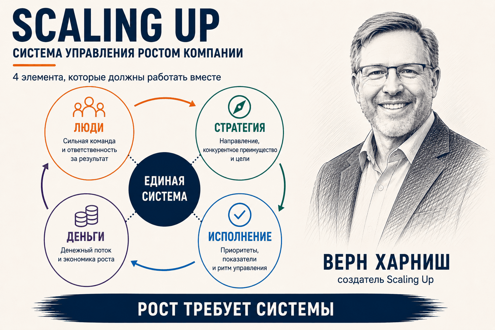
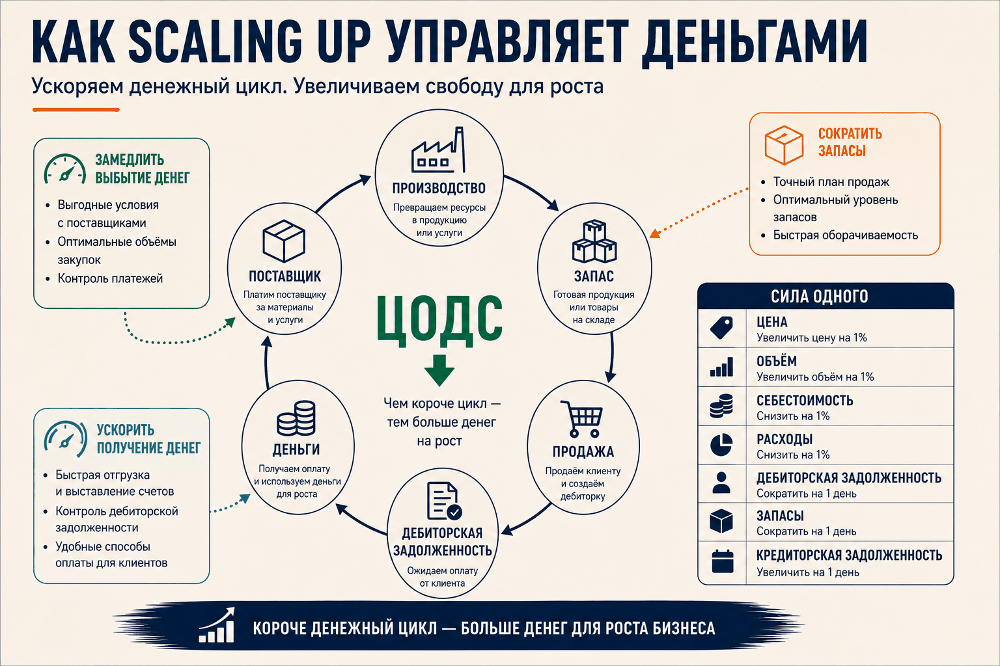
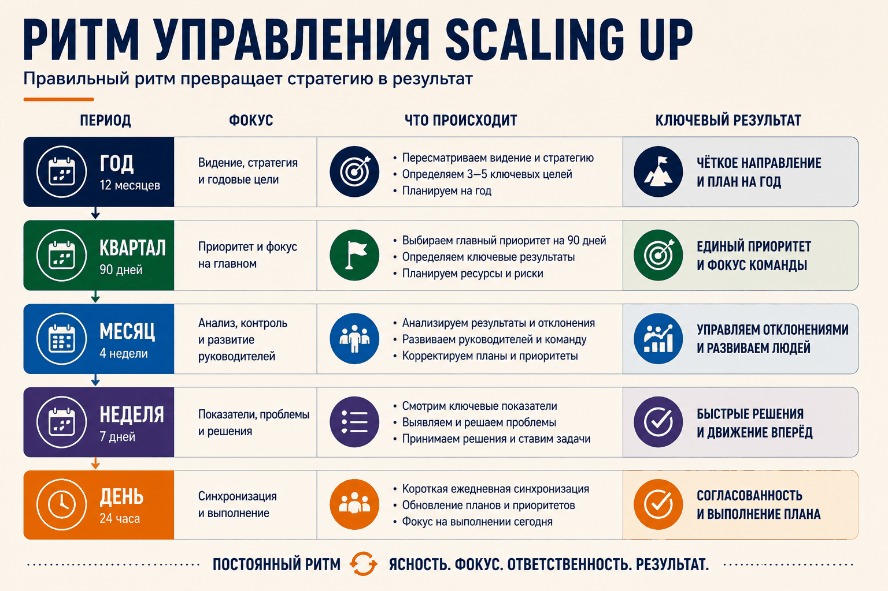
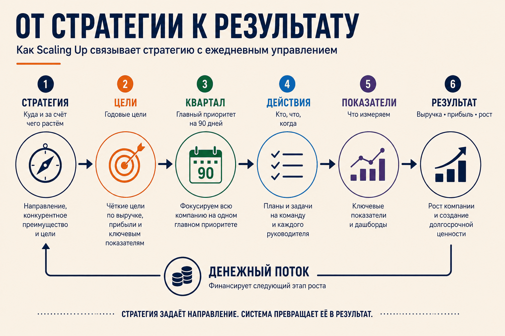

Scaling Up: система управления ростом
Мы продолжаем серию о готовых системах управления для среднего бизнеса. Первой была EOS — простая и последовательная система Джино Викмана.
Сегодня — Scaling Up Верна Харниша. Система, которая устроена сложнее, требует от команды больше и много обещает взамен.
Обещание Харниш формулирует вполне конкретно: сократить время, которое руководители тратят на управление операционной деятельностью, на 80%.
Разберёмся, откуда взялся этот подход, из чего он состоит, кому подходит и чем отличается от EOS.

Верн Харниш: как появился подход
Отец Харниша был инженером-ракетчиком. В конце 1960-х он вместе с тремя коллегами ушёл из Martin Marietta и запустил собственную технологическую компанию — и она взлетела. Верн, родившийся в 1959 году, застал это в том возрасте, когда всё запоминается: большой дом, деньги, отец-предприниматель.
В рецессию 1973 года бизнес рухнул. Семья распродала имущество, пытаясь его спасти, — и потеряла всё. Сам Харниш позже назвал это историей «из богатства в нищету»: обычно рассказывают наоборот. Отец так и не оправился.
Семья переехала в Канзас. В пятнадцать лет Верн вместе с отцом чинил и продавал бытовую технику.
Именно потеря отцовского бизнеса стала причиной, по которой он всю жизнь занимается одним и тем же — помогает предпринимателям не потерять своё.
От студенческого клуба до MIT
Харниш получил в Университете Уичито диплом инженера-механика, затем MBA. Ещё студентом основал Ассоциацию студентов-предпринимателей и в 1981 году был признан национальным студенческим лидером года.
В 1987 году он создал Организацию молодых предпринимателей (YEO) — потому что, по его словам, для предпринимателей, уже окончивших университет, никакого сообщества просто не было. Сегодня это Entrepreneurs' Organization с двумя десятками тысяч участников.
В 1991 году вместе с MIT и журналом Inc. Харниш запустил программу «Рождение гигантов» и возглавлял её пятнадцать лет. Причина была практической: программы MBA учили управлять уже большой компанией, но не объясняли предпринимателю, как вырастить свою до следующего масштаба. Через программу прошли более 1200 руководителей. Каждый год Харниш проверял инструменты на участниках и переделывал то, что не работало.
Почему появилась Gazelles
А потом он ушёл из собственной организации. И объяснил почему:
YEO работала только с первыми лицами. Их накачивали идеями, они возвращались в компании и сводили своих людей с ума.
Одного заряженного собственника мало. Нужно, чтобы вся управленческая команда говорила на одном языке и пользовалась одними инструментами. В 1997 году Харниш основал Gazelles — компанию, которая учит и сопровождает не руководителя, а руководящую команду целиком.
Книги
В 2002 году вышла Mastering the Rockefeller Habits — на русском она издана в 2011 году под названием «Правила прибыльных стартапов». В ней Харниш собрал практики, которые к тому моменту десять лет обкатывал на растущих компаниях.
Двенадцать лет спустя, в 2014 году, Харниш выпустил Scaling Up. Это не новая книга о другом, а переработанные «Правила»: во введении он прямо называет Scaling Up первым крупным переизданием своей первой книги. Отсюда и второе название — Rockefeller Habits 2.0.
Поэтому Scaling Up — результат не одной книги, а тридцати с лишним лет работы с растущими компаниями.
Почему компании ломаются при росте
Прежде чем разбирать систему, стоит понять, против чего она построена. У Харниша на это есть точный ответ — и он не про рынок и не про деньги.
Вспомните компанию из двух человек: основатель и помощник. Два канала связи. Добавьте третьего — каналов становится шесть. Добавьте четвёртого — двадцать четыре.
Команда выросла на 33%. Сложность — на 400%.
Дальше — экспоненциально. Именно поэтому руководители с тоской вспоминают первые годы, когда людей было мало, а продуктов и того меньше: тогда компанию можно было держать в голове.
Логика здесь та же, что у моделей роста Эрика Флэмхольца и Ларри Грейнера: компания упирается не в рынок, а в собственную систему управления.
Из растущей сложности Харниш выводит три препятствия масштабирования:
- Лидерство — не хватает руководителей, способных делегировать и предвидеть последствия своих решений.
- Масштабируемая инфраструктура — нет систем и структур, выдерживающих усложнившиеся коммуникации и принятие решений.
- Рыночная динамика — компания не справляется с растущей конкуренцией и размывающейся маржей.
Вся система Scaling Up — ответ на эти три препятствия. Разложен он на четыре вопроса.
Четыре вопроса
В основе Scaling Up — четыре области, в которых руководитель обязан принимать решения. Харниш формулирует их как вопросы, на которые компания должна отвечать по мере роста:
Люди. Довольны ли заинтересованные лица — сотрудники, клиенты, акционеры — вашим бизнесом? Достаточно ли они вовлечены? Есть ли кто-то, кого вы больше не хотели бы видеть членом команды?
Стратегия. Можете ли вы кратко сформулировать стратегию компании? Обеспечивает ли она устойчивый рост выручки и валовой маржи?
Исполнение. Все ли процессы идут как надо и обеспечивают высокую доходность?
Деньги. Есть ли у компании надёжный источник денег — желательно внутренний — для поддержания роста?
Вокруг этих четырёх вопросов собран набор инструментов и рабочих документов, связывающих стратегию с повседневным управлением.
Дальше — по каждому.
Люди
Основной принцип Харниша звучит просто: правильные люди правильно делают правильные вещи.
Под «людьми» он понимает не только сотрудников, но и клиентов, акционеров, инвесторов, поставщиков — всех, кто связан с компанией.
Блок устроен по нарастающей: сначала сам руководитель, потом распределение ответственности, потом команда под эту ответственность, и в конце — работа руководителей с людьми.
Начинает Харниш с руководителя, и делает это осознанно. Четыре области бизнеса — люди, стратегия, исполнение, деньги — у него имеют прямые аналоги в личной жизни: отношения, достижения, традиции и благосостояние. Одностраничный персональный план предлагает разобраться в этих четырёх областях так же, как руководитель разбирается в своей компании: чего он хочет в каждой и что для этого сделает в ближайший год. Смысл в том, что личная жизнь и работа переплетены в любом случае, и лучше, если руководитель понимает, чего хочет лично он, — иначе компания будет отвечать на этот вопрос за него.
Дальше — ответственность. Здесь два инструмента, которые смотрят на компанию под разными углами.
Таблица функциональной ответственности (ТФО) смотрит сверху вниз. Она перечисляет функции, которые компании нужны, и человека, отвечающего за каждую, а для каждой функции — результат и показатель. Ключевое правило: за результат отвечает один человек. Ответственность, разделённая между двумя руководителями, теряется первой. Заполненная карта сразу показывает и незакрытые функции, и руководителей, на которых навешано слишком много.
Таблица процессуальной ответственности (ТПО) смотрит поперёк — на сквозные процессы: разработка продукта, наём сотрудника, получение оплаты от клиента. У каждого процесса тоже один владелец и свой способ измерения. Это нужно потому, что самое неприятное обычно происходит не внутри подразделения, а на стыках между ними: проблема, которой не видно ни в одном отделе, становится видна в процессе.
Обе карты отвечают на вопрос «кто отвечает». Но закрытая позиция не означает, что человек с ней справится. Поэтому дальше Харниш разбирает поиск, подбор, удержание и развитие сотрудников. Отдельно он предупреждает: требования к команде меняются по мере роста, и человек, отлично работавший на одном этапе, не обязательно готов к следующему.
Последнее в блоке — сами руководители. Менеджер у Харниша не контролёр, а наставник. Пять функций хорошего менеджера: помогать людям использовать сильные стороны, устранять препятствия вместо демотивации, ставить точные цели, признавать достижения — и, наконец, самый неудобный пункт: нанимать меньше и платить больше.
Итак, люди на местах и за результаты отвечают. Следующий вопрос — за какие именно результаты.
Стратегия
Харниш делит работу над стратегией на два разных процесса: стратегическое мышление и исполнительное планирование. Сначала руководство решает, как компания будет конкурировать и за счёт чего выигрывать. Потом это переводится в цели, приоритеты, показатели и действия. Цикл: мысли → план → действия → обучение.
И здесь у Харниша есть требование, которое многих останавливает:
Стратегическая команда собирается еженедельно — отдельно от операционных совещаний. Раз в квартал, а тем более раз в год, недостаточно.
На этих встречах не обсуждают текучку. Только большие вопросы. Для многих команд это самый трудный пункт всей системы.
Начинается стратегическое мышление с основного замысла — ответа на вопрос, почему то, что делает компания, вообще важно. Харниш советует укладывать замысел в одно слово или одну идею. У Wal-Mart это возможность для обычных людей покупать то же, что покупают богатые. У самой Gazelles — «свобода». Способ найти собственный замысел он предлагает неожиданный: посмотреть, что по-настоящему выводит из себя первое лицо компании.
Главный инструмент стратегического мышления — «Семь уровней стратегии». Семь последовательных вопросов:
- Какое слово должно приходить на ум клиенту при упоминании вашей компании? У Google это «поиск».
- Кто ваша основная аудитория и какие три обещания вы ей даёте? Southwest Airlines обещает низкие цены, много рейсов и удовольствие от полёта. И чем вы подтверждаете, что обещания выполняются?
- Какие гарантии обеспечивают выполнение обещаний? Oracle обещала выплатить 10 млн долларов, если её серверы не окажутся впятеро быстрее конкурентов.
- Можете ли вы сформулировать стратегию одной строкой — ту, которая клиентам, скорее всего, не нравится, но приносит прибыль? У Apple это «закрытая система».
- Какие три-пять характеристик делают ваш продукт по-настоящему уникальным? Мебель IKEA нужно собирать самому.
- Каков ваш Х-фактор — то, что даёт преимущество перед конкурентами в 10 или в 100 раз? Харниш советует искать его там, где вас больше всего бесит собственная отрасль.
- Какова ваша прибыль на Х — единственный показатель, отражающий экономику бизнеса? У Southwest это прибыль на самолёт, а не на пассажиро-милю, как принято в отрасли. И связан ли с ним БИХАГ — цель на 10–25 лет, измеряемая в тех же единицах?
Взгляд наружу даёт SWT-анализ — переделанный SWOT. Вместо возможностей и угроз анализируются тенденции, причём выходящие за пределы отрасли и географии. Харниш считает, что классический SWOT провоцирует управленческую близорукость: компания видит только своё поле.
Всё это сходится в одностраничном стратегическом плане (ОСП) — семь колонок на одном листе. Ценности и замысел, целевой рынок и обещания клиенту, БИХАГ, годовые и квартальные приоритеты, критическое число, показатели по людям и процессам, внизу — результаты SWT-анализа. Формат жёсткий намеренно: на одной странице не спрячешься за формулировками, команде приходится договориться.
«Общее видение» — сокращённая версия ОСП. Компаниям до 50 человек этот документ ОСП заменяет. Крупным он нужен для другого: донести видение до сотрудников, клиентов и инвесторов на одном листе, который не стыдно дать новичку в первый день.
Стратегия сформулирована. Теперь её надо довести до понедельника.
Исполнение
Три опоры: приоритеты, данные и ритм.
Приоритеты
Исходная мысль простая: если приоритетов слишком много, приоритетов нет.
Харниш выстраивает их по горизонтам. На 10–25 лет — БИХАГ, большая дерзкая амбициозная цель. Ниже — целевые уровни на три-пять лет, затем годовые цели, затем квартальные. На год и на квартал компания определяет критическое число: единственный показатель, по которому команда понимает, выигрывает она или нет.
Квартальный приоритет Харниш предлагает превращать в квартальную тему — короткое запоминающееся название, которое становится общим фокусом на 90 дней.
Данные
Данные у Харниша нужны не для отчётности, а для предвидения.
Нужны два вида данных.
Количественные — показатели. Причём не только у компании и топ-менеджеров: у каждого сотрудника или команды должен быть свой действующий показатель, по которому человек сам отвечает на вопрос «насколько успешно я отработал сегодня и на этой неделе?». Эти показатели связаны с критическим числом компании и квартальным приоритетом. Получается сквозная линия: цель компании → цель подразделения → показатель сотрудника.
Качественные — то, что цифры не показывают. С сотрудниками Харниш предлагает еженедельный разговор по схеме «начать — прекратить — продолжить»: что стоит начать делать, от чего отказаться, что продолжать. С клиентами — беседу по четырём вопросам: что нравится, что не нравится, что хотели бы изменить, что ещё компания может для них сделать.
И то и другое попадает на еженедельное совещание руководства. Обратная связь не просто собирается — она замыкается в управленческий цикл.
Результаты Харниш требует вывешивать на видное место: показатели, цели, критическое число, текущий прогресс. Аналогия у него спортивная — табло на стадионе.
Ритм
Третья опора — регулярные встречи: ежедневные, еженедельные, ежемесячные, квартальные и годовые. У каждой своя задача, и они связаны между собой: то, что не решилось на одном уровне, поднимается на следующий. Подробно этот ритм разберём чуть ниже отдельно.
Здесь важно одно правило: любое совещание должно заканчиваться конкретикой. Для этого — «Кто, что, когда» (КЧК): кто отвечает, что именно делает, к какому сроку.
Все десять практик исполнения собраны в «Контрольном листе принципов Рокфеллера» — по нему команда раз в квартал проверяет саму себя.
Деньги
Рост притягивает деньги. Это первый закон бизнес-гравитации.
Харниш начинает финансовый блок с неприятного наблюдения: руководители растущих компаний, договариваясь с поставщиками, клиентами и банками, смотрят на выручку и прибыль — а отчёт о движении денежных средств пролистывают.
Главный показатель здесь — цикл обращения денежных средств (ЦОДС): время от момента, когда компания заплатила за ресурсы, до момента, когда деньги вернулись после оплаты клиентом. Чем короче цикл, тем меньше денег нужно, чтобы финансировать рост.
Классический пример — Dell. В середине 1990-х компания росла стремительно и «сломалась при росте»: деньги закончились. Пришедший финансовым директором Том Мередит посчитал ЦОДС — 63 дня. Дальше он делал одну вещь: каждый квартал выбирал ровно одну инициативу по ускорению денежного потока. Через десять лет, к моменту его ухода, ЦОДС составлял минус 21 день: Dell получала деньги за три недели до того, как должна была их потратить. Рост перестал съедать деньги и начал их производить.
Инструмент для поиска таких возможностей — «Стратегия увеличения объёма денежных средств» (СУОДС). Команда разбивает цикл на четыре части — продажи, производство и доставка, выставление счёта и оплата, запасы — и по каждой ищет три типа улучшений: сократить длительность, устранить ошибки, изменить бизнес-модель. На практике это выглядит так:
- выставлять счета раньше и чаще;
- сокращать сроки получения оплаты;
- просить предоплату;
- сокращать время производства или оказания услуги;
- уменьшать запасы и незавершённое производство;
- договариваться с поставщиками об отсрочке;
- устранять ошибки, из-за которых заказы переделывают, а оплату задерживают.
Штурм проводится каждые 90 дней, одна идея становится приоритетом следующего квартала. Ровно то, что делал Мередит.
Второй инструмент — «Сила одного». Эту главу Харниш написал в соавторстве с австралийской командой Алана Милца: они считают, что произойдёт с прибылью и денежным потоком, если изменить на 1% или на один день каждый из семи рычагов — цену, объём продаж, себестоимость, операционные расходы, дебиторскую задолженность, запасы, кредиторскую задолженность. Расчёт показывает, какой рычаг в конкретной компании даёт наибольший эффект, — и это редко тот, на который команда давит по привычке.

Ритм управления
Если собрать всё вместе, Scaling Up связывает компанию пятью уровнями ритма.
Год. Пересмотр стратегии, БИХАГ, годовые цели и критическое число года. Заполняется ОСП.
Квартал. Приоритеты на 90 дней, квартальная тема, квартальное критическое число. Мозговой штурм по денежному циклу — одна инициатива в работу.
Месяц. Встреча на целый день, с участием всех, кто в компании кем-то руководит. Посвящена обучению, обмену опытом и решению проблем, а не разбору отчётов. Харниш называет её важнейшей практикой ритма: именно здесь менеджеры среднего звена дорастают до самостоятельных руководителей. Если таких встреч нет, компания со временем перерастает своих менеджеров.
Неделя. Два разных совещания: стратегическая команда обсуждает большие вопросы, операционная — показатели, приоритеты и проблемы. Плюс обратная связь от сотрудников и клиентов.
День. Короткая синхронизация по текущей работе.
Уровни не автономны: то, что не решилось на ежедневной встрече, поднимается на недельную, оттуда — на месячную и квартальную. Это не набор совещаний, а один механизм.

Инструменты
У каждой задачи в Scaling Up есть свой документ или форма.
| Задача | Инструмент Scaling Up |
|---|---|
| Связать личные цели руководителя с работой | Одностраничный персональный план |
| Распределить ответственность за функции | Таблица функциональной ответственности (ТФО) |
| Распределить ответственность за процессы | Таблица процессуальной ответственности (ТПО) |
| Выработать стратегию | Семь уровней стратегии |
| Зафиксировать стратегию и план | Одностраничный стратегический план (ОСП) |
| Донести видение до всех | Общее видение |
| Увидеть внешние изменения | SWT-анализ |
| Сфокусировать квартал | Квартальная тема и критическое число |
| Получать качественную обратную связь | «Начать — прекратить — продолжить», беседа по четырём вопросам |
| Довести совещание до действия | «Кто, что, когда» (КЧК) |
| Проверить качество исполнения | Контрольный лист принципов Рокфеллера |
| Ускорить денежный поток | ЦОДС и СУОДС |
| Найти главный финансовый рычаг | «Сила одного» |
| Определить экономику бизнеса одним числом | Прибыль на Х |
Список неполный — в книге инструментов заметно больше.

Кому подходит
Scaling Up рассчитана на компанию с уже работающей бизнес-моделью и продолжающимся ростом. Часть инструментов Харниш прямо адресует компаниям от полусотни человек, а верхняя часть его примеров — это несколько сотен сотрудников и три-четыре уровня управления. Признаки, по которым видно, что система нужна: собственник остаётся главным центром решений, руководители работают каждый в своей зоне без общего фокуса, стратегия не превращается в приоритеты, а растущий оборот требует всё больше денег. Условие только одно, но жёсткое: собственник и руководящая команда должны работать по системе сами. Передать внедрение операционному директору как проект не получится.
Если сомневаетесь, на каком этапе сейчас ваша компания и какие опоры управления просели, — есть интерактивный тест «Болезни роста» на пять минут.
Плюсы и ограничения
Главное преимущество Scaling Up — глубина. Харниш не ограничивается набором правил: стратегия, команда, исполнение и деньги разобраны каждый со своими инструментами, формами и показателями. Систему можно использовать не для разового наведения порядка, а для развития управления по мере роста.
Второй плюс — связка стратегии с исполнением и деньгами. ОСП, квартальные приоритеты, критическое число, показатели сотрудников и работа с денежным циклом собраны в одну линию. Для собственника это и есть самое ценное: стратегия не остаётся отдельным документом, а доходит до действий и до счёта в банке.
Третий — инструменты работают по отдельности. ТФО, «Силу одного» или КЧК можно взять и применить, не внедряя ничего больше.
Теперь про ограничения.
Сложность. Инструментов много, они связаны между собой, и книга это не скрывает. Scaling Up тяжело читать подряд: один инструмент тянет за собой другой, а тот — ссылку на исследование или на ещё одну книгу. Это скорее справочник по управлению ростом, чем текст, который прочитал и отложил. Работать с ним придётся долго, и попытка внедрить всё сразу надёжно превращает систему в дополнительную бюрократию.
Высокие требования к команде. Еженедельная стратегическая сессия, квартальные штурмы, показатели у каждого сотрудника, ритм из пяти уровней — это дисциплина всей руководящей команды, а не набор инструментов для одного человека. Здесь и срабатывает то, ради чего Харниш когда-то создал Gazelles: система изначально проектировалась под команду, а не под собственника.
Свобода выбора. Не все инструменты нужны каждой компании, и решать, что применять сейчас, приходится самостоятельно. Для зрелой команды это плюс. Для той, которая только начинает наводить порядок, — источник растерянности.
Scaling Up и EOS
У двух систем во многом одно представление о том, что нужно компании для управляемого роста: единая цель, понятная стратегия, чёткая ответственность, несколько ключевых показателей, регулярный ритм и решения вместо обсуждений.
Связь тут не случайная. Джино Викман прямо пишет в Traction, что Харниш познакомил его со своим одностраничным стратегическим планом и что это стало одним из источников В/ОД — центрального инструмента EOS. Наряду с идеями Джима Коллинза и Патрика Ленсиони.
Сам Харниш к этому относится сдержанно. В Scaling Up есть абзац, где он замечает: после выхода «Правил» многие элементы его системы были скопированы другими авторами и при переработке заметно упрощены. Имён он не называет и признаёт, что несколько приоритетов и KPI лучше, чем ничего. Но предупреждает: упрощая, вы рискуете потерять значительную часть выгоды. И приводит совет Эйнштейна — упрощать, пока это возможно, но не более того.
Где именно проходит эта граница, каждый решает сам. Разница между системами вполне конкретна:
- Стратегия. У EOS — восемь вопросов В/ОД. У Харниша — семь уровней стратегии, SWT и еженедельная работа стратегической команды.
- Деньги. У EOS финансового контура практически нет. У Харниша это четверть системы.
- Ритм. EOS: год, квартал, неделя. Scaling Up: плюс день и плюс месяц, причём месяц Харниш считает ключевым для выращивания руководителей.
- Свобода. EOS предписывает последовательность внедрения. Scaling Up даёт коробку инструментов и оставляет выбор команде.
При этом системы не противоречат друг другу в принципах. Можно взять EOS как основу, а отдельные инструменты Scaling Up — там, где нужна глубина: денежный цикл, «Сила одного», семь уровней стратегии. И наоборот.
Разницу я бы сформулировал так: EOS проще начать и внедрить как готовую систему. Scaling Up требует большего погружения, но позволяет развивать управление вместе с ростом компании.
Вывод
Scaling Up — глубокая система управления растущей компанией, собранная из тридцати лет практики. Её сильная сторона — связка стратегии, команды, исполнения и денег в один механизм, где видно, как одно тянет другое.
Она дороже во внедрении, чем более простые системы: требует времени, дисциплины и зрелой руководящей команды. Взамен даёт то, что не заканчивается через год после внедрения, — набор инструментов, который растёт вместе с компанией.
И даже если не внедрять Scaling Up целиком, отдельные её инструменты работают самостоятельно. Начать можно с любого, который решает вашу сегодняшнюю задачу.
Источники: Верн Харниш, Scaling Up: How a Few Companies Make It…and Why the Rest Don't (рус. изд. «Развитие бизнеса: инструменты прибыльного роста»); Джино Викман, Traction: Get a Grip on Your Business; Scaling Up (Gazelles Inc.); интервью Верна Харниша SmartCompany и The CEO Magazine.